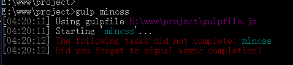

原文连接:https://www.cnblogs.com/fengyumeng/p/11072076.html
序
我们都知道，浏览器上是可以看到前端的html和js代码的，所以如果遇到隐私心比较强的老板，你就冷不丁的会接受到一个代码加密的需求，当接受到这个需求的时候你怎么完成？那我希望我的这篇博客可以帮助到你。
首先，告诉你的老板，严格意义上的加密是不存在的，能够实现的只有对前端代码进行压缩混淆，增加阅读难度。
本篇教程全篇描述的，就是对代码进行混淆的手段，从而满足老板提出的加密需求。
为了保证本篇教程真实可用，我将使用一台新的Windows系统，从无到有进行演示，同时将操作流程记录在这里，供你参考，也希望能够帮你跳过一些坑，如果你遇到什么问题，请留言讨论。
安装NodeJs
如果你没安装过node，请跟着教程走，如果你安装过，请直接跳到下一节。
下载地址：http://nodejs.cn/download/
直接下载安装，安装的过程是傻瓜式的下一步，唯一可以改变的是安装位置。
安装完成后打开cmd命令行，查看版本号是为了确认是否安装成功。
安装插件
切换到项目根目录：
安装gulp插件包：npm install --save-dev gulp
效果如图：
别急，还有很多包，命令一条一条刷起来：
npm install --save-dev del
npm install --save-dev gulp-concat
npm install --save-dev gulp-header
npm install --save-dev gulp-if
npm install --save-dev gulp-minify-css
npm install --save-dev gulp-htmlmin
npm install --save-dev gulp-rename
npm install --save-dev gulp-replace
npm install --save-dev gulp-uglify
npm install --save-dev gulp-babel
npm install --save-dev babel-preset-es2015
npm install --save-dev @babel/core
npm install --save-dev @babel/preset-env
注意事项
插件安装完成后，我们的前期工作就做完了。
我们会发现项目目录中多个一个node_modules目录和package-lock.json文件，json文件中是我们的插件列表，node_modules目录中是我们安装的插件包。
index.html是我的主入口文件，src目录就是我的项目中存放代码的目录，也就是我要压缩加密构建的目录。
src里有三个子目录，controller存放独立的js处理前端业务逻辑，style存放css样式文件，view存放html页面。
在编写脚本之前，我需要直白的告诉你，如果你的JS里有ES6语法，正常打包是打不了的，不过我们的前期工作已经把处理这个问题的工具包也一起安装了，但是也仅限于处理单独的JS文件。
如果你是HTML代码里嵌JS，并且JS里有ES6语法，那么需要把JS代码拎出来做成单独的JS，或者手动将ES6写法改成ES5。
总之，如果你打包报错，很大可能是ES6语法导致，其次是文件路径错误。
压缩JS
回到我们的项目根目录，创建一个gulpfile.js文件，这个是固定的文件名：
引入包：
var gulp = require('gulp');
var uglify = require('gulp-uglify');
var babel = require('gulp-babel');
var minifyCss = require("gulp-minify-css");
var htmlmin = require('gulp-htmlmin');
var header = require('gulp-header');
var del = require('del');
定义一个目标目录：
var destDir = './dist';
定义一个注释，因为我希望在压缩后的代码中第一行添加一点注释：
var note = ['/** 小样，看源码？想得美！ */\n <%= js %>', {js: ';'}];
监听任务：
gulp.task('minjs', function () {
//定义路径
var src = [
'./src/**/*.js'
];
gulp.src(src)
.pipe(babel({presets: ["@babel/env"], plugins: []}))//es6转es5
.pipe(uglify())//压缩
.pipe(header.apply(null, note))//添加头部注释
.pipe(gulp.dest(destDir));//将压缩后的内容输出到目标目录
});minjs就是我们自定义的任务名，也就是说 我们在命令行输入gulp minjs 这行命令，这段代码就会执行。
如果只输入gulp命令，它会自动去找名为default的任务。
var src = ['./src/**/*.js']; 就是我们想要抓取的文件，使用了通配符，你几乎一定会有需求像下面这样写：
var src = [
'./src/**/*.js'
, '!./src/config.js'
, '!./src/lib/extend/*.js'
];感叹号的意思是排除。
这里说明一下destDir只会代替通配符之前的目录路径，比如说我这里的destDir定义的是./dist，那么 ./src/controller/admin.js 压缩后的路径就是 ./dist/controller/admin.js。
好了，打开命令行，输入命令：gulp minjs
查看项目，js文件已经压缩成功了。
压缩CSS
任务的监听和压缩JS是没有差别的，只不过压缩任务用gulp-minify-css插件来完成。
gulp.task('mincss', function () {
var src = [
'./src/style/*.css'
];
gulp.src(src).pipe(minifyCss()).pipe(gulp.dest(destDir + '/style'));
});
输入命令：gulp mincss

查看项目也没有任何问题：

非常智能的它会把css中的注释给你删掉。
压缩HTML
压缩HTML可以传入很多参数指定相应的行为：
gulp.task('minhtml', function () {
var options = {
removeComments: true,//清除HTML注释
collapseWhitespace: true,//折叠空白
minifyJS: true,//压缩页面JS
minifyCSS: true//压缩页面CSS
};
var src = [
'./src/views/**/*',
];
gulp.src(src)
.pipe(htmlmin(options))
.pipe(gulp.dest(destDir + '/views'));
});更多参数请移步这里来看：https://github.com/kangax/html-minifier/blob/gh-pages/README.md
输入命令：gulp minhtml
压缩后的HTML：
全部压成一行，文件中的css和js也一并压缩了。
一条龙处理
但是我们总不可能是打个包要跑多条命令吧，那多麻烦，现在我们就整合整合，让这些任务合并成一个任务。
我们创建一个task对象，把各个任务的内容放进去，并且加一个清理dist目录的方法，和一个move方法负责将没有被压缩的文件复制过去。
//任务列表
var task = {
//清理dist目录
clear:function () {
del(['./dist/*']);
},
minjs:function () {
//定义路径
var src = [
'./src/**/*.js'
];
gulp.src(src)
.pipe(babel({presets: ["@babel/env"], plugins: []}))//es6转es5
.pipe(uglify())//压缩
.pipe(header.apply(null, note))//添加头部注释
.pipe(gulp.dest(destDir));
},
mincss:function () {
var src = [
'./src/style/*.css'
];
gulp.src(src).pipe(minifyCss()).pipe(gulp.dest(destDir + '/style'));
},
minhtml:function () {
var options = {
removeComments: true,//清除HTML注释
collapseWhitespace: true,//折叠空白
minifyJS: true,//压缩页面JS 如果你确信你的HTML页面中的js不包含有es6语法，那么可以压缩js 否则还是得把js抽离成单独的文件进行压缩
minifyCSS: true//压缩页面CSS
};
var src = [
'./src/**/*',
];
gulp.src(src)
.pipe(htmlmin(options))
.pipe(gulp.dest(destDir));
},
move: function () {
//复制文件夹 没有被压缩的文件就在这里复制
gulp.src('./src/**/*.png').pipe(gulp.dest(destDir));
}
};
我们在压缩js的时候说了，如果只是gulp命令，它会去找名为default的任务，我们就在default任务里遍历task对象，将其中的方法轮流执行一遍。
gulp.task('default', function () {
for (var key in task) {
task[key]();
}
});这样，我们只需要一个gulp命令，也就走完了整个构建流程。
同时，我们将单个的任务指向task中对应的方法：
gulp.task('clear',task.clear);
gulp.task('minjs',task.minjs);
gulp.task('mincss',task.mincss);
gulp.task('minhtml',task.minhtml);
gulp.task('move',task.move);
无论是单独处理一个环节，还是整个构建流程，我们都可以很方便的完成。
最后，感谢阅读。 PS：欢迎关注，有粉必回。